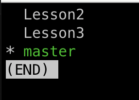

Git Commands
Basic Git Commands
- git init: Initialize a new Git repository in the current directory
- git status: Shows the status of working directory and staging area, displaying changes and untracked
files.
- untracked: Untracked files are the files which git is not tracking.
- staged: Staged Changes means the changes that you have decided to commit…
- git add <file-name>: Add given file to the stageing area.
- git add . : Add all untracked files to the stageing area.
- git rm --cached <file-name >: Remove file from staging area to untracked area.
- commited: Commit status allows you to mark commits with status information from other systems.
- git commit -m "your commit message" : Commit the staged changes to the local repository with a
message.
- modified: After commited the file you again modified the file .
- deleted: The status of a file is deleted either to restore or you have to commit the changes.
- git log : Show the commit history for the current branch.
- git diff : Show changes between commits ,branches or the working directoy and the index.
- git help commit : Help for the commit command.
- git checkout <branch-name>: Switch branches or restore working tree files.
- git rm <file_name >: To remove a file.
- git restore < file_name >: To discard changes in working directory i.e previous commit changes will
be avalable.
- git restore --staged <file_name >
- git rm <file_name >: To remove a file
- git rm --cached <file_name >: staged to untracked
- git mv < source fileName> < destination filename>: To Rename a file
- git commit -a : Whenever a modified file want to commit then we use this command.
Uncovered Commands
- clone
- push
- pull
Branching
- git branch : Manage branches
- git branch # List all branches
- git branch <name> # Create a new branch
- git checkout -b < branch-name > # Create a newBranch and checkout to that branch
- git branch -d <name> # Delete a branch
- Below image is the result of git branch command

- Below image is the result of git branch command after git branch -d Lesson2
- Below image is the result of git branch command after git branch -d Lesson3

- Summary of all git branch commands

- Below image is the result of above image commands

Mergeing
- All you have to do is check out the branch you wish to merge into and then run the git merge command
- Master Branch Index

- Iss53 Branch Creation from Master branch

- Iss53 Branch Commit

- All Branches from Master pointing index is C2

- HotFix Branch got merged to master, this is fast-forward merge there is not merge commit.

- Work is continue in Iss53 branch latest commit is C5

- Before merging iss53 branch to master, below picture show the current index. Here git will create merge
commit, as Ancestor got change from C2 to C4 after hotfix branch merge. This is called as three-way merge.

- MergeCommit

- Merge Conflict Section

- Merge section2 to master

- git mergetool: Which fires up an approproate visual merge tool and walks you through the conflicts.
Undoing Changes
- git reset < CommitId > :Move head to current commitId but content of the file will
not change
- git reset --hard < CommitId > : Discard all changes and reset.
- git revert < CommitId > Create a new Commit that undoes the changes from a previous
commit.
- git stash Temporarily save changes that aren't ready to be committed, in staged state.
- git stash -u :Temporarily save changes that are not ready to be commited in
unstaged state
- git stash list: Displays list of stashes.
- git stash apply : Latest stash will be applied.
- git stash apply stash@{n} : This command is used to pick the stash by Id to apply.
- git stash pop: This command will apply the latest stash and delete the changes in
the Temporarily location.
- atleast one commit should be avalable for stash to work.

- git rm < file_name >: Remove a file from the working directory and staging area.
- git checkout --< file_name >: Discard changes in the working directory for a
particular file.
Git Config & Aliases
Personalizing Git configuration can make working with Git faster and more efficient:
- Before global configuration state

- Empty global configs

- git commit --amend --reset-author When user name and user email is not configured in global configs of git, by default email is from the system logged in user and domain is the system name

- git branch -m main Initally when defaultbranch is not configured at global level default branch is taken as master. This command is used to update the repository with the global defaultbranch name


- git config: Set user-specific configuration values like name, email, and editor.
- git config --global user.name "nlaxmi1260" - Setting User Name
-
git config --global user.email "yaram.nlaxmi@gmail.com" - Setting User Email
-
git config --global init.defaultBranch "main"
- Setting Default Branch
- git config --global core.editor "vim" - Setting Default Editor
- git config --global --list : to get the global configurations
- git config --global --edit : Command to edit the global configs
- Git Aliases : You can create aliases for frequently used commands to speed up your workflow.
- git config --global alias.co checkout
-
git config --global alias.cm commit
-
git config --global alias.st status
-
git config --global alias.br branch
Git local machine config with GitHub
- Make sure git is installed freshly, remove any config file at ~/ssh/config, remove and ssh keys (both public and private) at ~/ssh.
- In GitHub website make sure to delete any already configured ssh keys
- Steps to configure git on local Mac machine
git config --global user.name "nlaxmi1260" Command to set name at global levelgit config --global user.email "yaram.nlaxmi@gmail.com"
Command to set email at global levelgit config --global init.defaultbranch=main
Command to set defaultBranch at global levelcd ~/ssh Command to move to ssh folderssh-keygen -t ed25519 -C "yaram.nlaxmi@gmail.com" Command to generate private and public SSH keys, on clicking this command we will get prompt to give a name for the keys and passphase, give a name "Lakshmi"cat Lakshmi.pub Command to get the contents of the public key. Copy the contents of the public key file.- On GitHub.com after logining in go to setting and SSH and GPG keys section. Click on New SSH key, give a name to the key just to indentify on which machine this key belongs to. Paste the public key
- If you're using macOS Sierra 10.12.2 or later, you will need to modify your ~/.ssh/config file to automatically load keys into the ssh-agent and store passphrases in your keychain.
Host github.com
AddKeysToAgent yes
UseKeychain yes
IdentityFile ~/.ssh/Lakshmi add this content to ~/ssh/config file to give private key location if file is not present touch ~/ssh/config- GitHub generate SSH Key documetation
- GitHub add public key documentation
Collaboration (Remote Repositories)
Managing remote repositories is essential when collaborating with others:
git remote: Manage remote repository connections.
- git remote -v: List remote repositories
- git remote add < name > <url >: Add a new remote repository
- git remote rm < name >: Remove a remote repository.

- git branch --set-upstream-to=origin/main
- git clone < repository-url >: Clone a remote repository to your local machine.
- git clone -b <branch-name> < repository-url >: Clone a remote repository to your local machine with a specific branch.
- git push <remote > <branch >: Push local commits to a remote repository.
- git pull <remote > <branch >: Fetch and integrate with another repository or a branch.
- git push --set-upstream origin < BranchName >: when you are trying to push to github firsttime
Advance Git Commands
git cherry-pick <commit-hash> Apply a specific commit from another branch into the current branch.git reflog: View the history of HEAD changes, including commits that may not be in your current branch.
git blame <file_name>: Show the author of each line in a file, helpful for tracking down who made specific changes. git clean -f: Remove untracked files from the working directory.